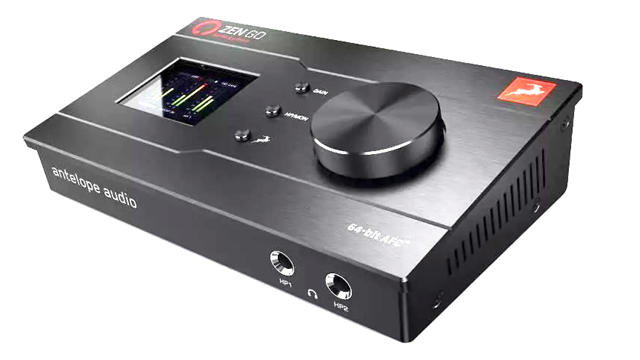
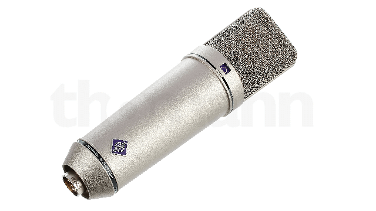
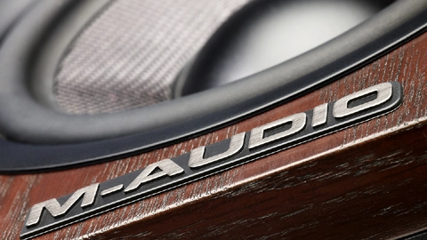

Profesjonalne studio wokalne, prowadzone przez Gracjana Kalandyka
Zapraszamy!
SZKOŁA
BLACK CAT DIVISION to miejsce zbudowane z miłości i pasji do muzyki. Szkoła powstała w 2017 roku. Pasja pozwoliła nam w naturalny i szybki sposób poszerzyć działalność szkoły.
Nasze zajęcia prowadzone są z wielkim zaangażowaniem a materiały dydaktyczne nie są nudne i cały czas angażują naszych uczniów w 100%. Nasi podopieczni realizują wyuczone utwory na profesjonalnym sprzęcie studyjnym!
Sprawdź nasze wideo na FB i Youtube.
BLACK CAT DIVISION to nie tylko szkoła, to także wydawnictwo muzyczne które dostarczy twoją piosenkę do wszystkich mediów streaming’owych i zapewni odpowiedniąpromocje.
Jesteśmy miejscem które prócz zajęć wokalnych i instrumentalnych oferuję rejestracje i realizacje nagrań. Mix, mastering, a nawet pisanie utworu od podstaw czy komponowanie muzyki.
Chciałabyś/chciałbyś nauczyć się pisać i tworzyć utwory? Odwiedź nas i umów się na pierwszą lekcje.
GRACJAN KALANDYK
Gracjan Kalandyk to uczestnik IV edycji programu X-Factor oraz finalista V edycji The Voice of Poland gdzie pod skrzydłami Justyny Steczkowskiej zajął III miejsce. Jest również absolwentem wokalistyki jazzowej i muzyki estradowej na Akademii Muzycznej w Gdańsku oraz czynnym wokalistą z doświadczeniem scenicznym, gitarzystą, kompozytorem i autorem tekstów.
Ma za sobą koncerty, na których wystąpił wspólnie m. in. z: Margaret, Juan Carlos Cano, Justyną Steczkowską, zespołem Dżem, Markiem Piekarczykiem i TSA. Ma na swoim koncie debiutanckim album, wydany nakładem największej wytwórni w Polsce - Universal Music Polska. Produkcją albumu zajął się Robert Amirian, znany ze współpracy z takimi artystami jak: Fismoll, Ewa Farna, Ania Szarmach, Kari, Kasia Kowalska, Anita Lipnicka, Kayah, Mietek Szcześniak czy Kuba Badach. Najnowsze single artysty zapowiadające kolejny album, produkowane były ze znanym duetem – Martin Lange.
DAWID MAJEWSKI

Dawid Majewski to multiinstrumentalista pochodzący z Elbląga. Absolwent Państwowej Wyższej Szkoły Zawodowej w Elblągu na kierunku Pedagogiki a dokładniej - Edukacji Wczesnoszkolnej z Terapią Pedagogiczną. Dawid prócz bogatej wiedzy pedagogicznej i świetnego podejścia do uczniów dysponuje również olbrzymią wiedzą muzyczną. Swoją przygodę z instrumentami rozpoczął ponad 15 lat temu. Czynny basista składu Birds No Fly oraz Gracjana Kalandyka. Jako muzyk zwiedził już nie jedną scenę i zagrał niejeden koncert. Z projektem Gracjana zagrał dziesiątki koncertów w całej Polsce oraz za granicą (m.in. Malta). Prócz gitary basowej Dawid świetnie odnajduję się za klawiszami i gitarami – elektryczną, akustyczną i klasyczną, i to właśnie te instrumenty prowadzi w BLACK CAT DIVISION, a uczniowie pod jego okiem robią błyskawiczne postępy pracując na materiałach swoich ulubionych wykonawców.
OPINIE
Laureat Konkursu 2022
GOLD 2022
Ocena: 9.1
Chodzę na zajęcia od jakiegoś czasu i zawsze chwile spedzone na zajęciach są przyjemnie spędzone. Zajecia są prowadzone w przyjemnej, przyjaznej atmosferze. Zero spinania się na zajęciach tylko czysta zabawa. Gorąco polecam.
Mateusz Balaj
★★★★★
Pan Gracjan to świetna osoba, ale również genialny nauczyciel śpiewu! To, co przede wszystkim go cechuje to wielkaaa cierpliwość, doświadczenie i pasja. Zajęcia prowadzone są w luźnej, przyjemnej atmosferze. Polecam z całego serducha tym, którzy kochają muzykę, a pragną nauczyć się czegoś nowego i poszerzyć swoje zdolności! :)
Julia Orłowska
★★★★★
Lekcje prowadzone w profesjonalny sposób, świetne podejście do początkujących. Gracjan ma dużo cierpliwości i pasji do muzyki którą zaraża!!! Gorąco polecam!!!
Paweł Mroczek
★★★★★
WOKAL
Chcesz zacząć śpiewać ale nie wiesz jak się do tego zabrać?
Chcesz przygotować się do festiwalu/ konkursu?
A może chcesz wziąć udział w programie typu „Talent Show”?
Zawsze marzyłaś/łeś o napisaniu, skomponowaniu i nagraniu własnej piosenki?
W BLACK CAT DIVISION oferujemy indywidualne zajęcia wokalne prowadzone przez Gracjana Kalandyka. Duże doświadczenie na scenie i w studiu, wykształcenie muzyczne i lata prowadzonych zajęć wokalnych to pewność, że trafiłaś/łeś pod właściwy adres.
Jeśli nie wiesz na jakim jesteś poziomie zaawansowania, nie przejmuj się!
Umów się na pierwszą lekcję, pokaż co potrafisz, a trener wokalny dopasuje materiały dydaktyczne do twojego poziomu.
Nasze zajęcia wokalne oparte są na pracy z profesjonalnym sprzętem studyjnym z najwyższej półki.
SPRAWDŹ NAS
Sprawdź nas na YouTube i zobacz co potrafią nasi podopieczni!
Mrozu - Napad
Varius Manx - Ruchome piaski
(wyk. Alicja Semkiw)
Viki Gabor - Moonlight
(wyk. Agatka Gastoł)
GITARA
Zawsze marzyłaś/łeś o grze na gitarze podziwiając swoich ulubionych artystów na YouTube?
Zawsze chciałaś/łeś zagrać na wielkiej scenie przed dużą publiką?
Marzyłaś/łeś o zagraniu znanych utworów przy ognisku?
W BLACK CAT DIVISION pomożemy Ci spełnić marzenia! W naszej szkole nie ma nudnych materiałów dydaktycznych. Nowoczesne podejście do nauki naszych pedagogów/nauczycieli, dużo energii i materiały szkoleniowe uważnie dobierane do umiejętności i upodobań muzycznych naszych podopiecznych to przepis na sukces!
BAS
Zawsze chciałeś grać na basie jak Sting?
A może szaleństwo basisty zespołu Red Hot Chili Peppers przykuło twoją uwagę?
Grube struny to twój żywioł?
W BLACK CAT DIVISION nauczymy grać na basie każdego! I to bez względu na stopień zaawansowania. Nieważne czy już grasz na basie od jakiegoś czasu, czy to twój pierwszy kontakt z instrumentem. Poziom zaawansowania dopasowujemy do ucznia i przypominamy – u nas nie ma nudnych materiałów dydaktycznych.
Wszystkie zagadnienia opracowujemy na znanych utworach topowych zespołów - Iron Maiden, The Police, Nirvana i wiele innych! Wpadnij na zajęcia gitary basowej do BLACK CAT DIVISION i zagraj swoje ulubione piosenki!
PIANINO
Elton John, Freedie Mercury, Bruno Mars – wszyscy Ci znakomici artyści komponowali/komponują swoje utwory na klawiszach.
Pianino otworzyło drogę do muzyki niejednemu artyście, wpadnij na zajęcia pianina i daj się porwać muzycznej przygodzie. Dołącz do naszego zespołu i nagraj z nami cover w studyjnej jakości! (wideo band)
UKULELE
Kto by nie chciał grać na ukulele i śpiewać jak Billie Eilish?
W BLACK CAT DIVISION wszystko staje się możliwe! Ukulele to łatwy instrument, który poznasz dzięki naszej szkole w ciekawy i interesujący sposób! Chcesz grać swoje ulubione piosenki? W BLACK CAT DIVISION nauczymy Cię grać na ukulele.
Sprawdź video naszych uczniów i zapisz się na pierwszą lekcje!
STUDIO
BLACK CAT DIVISION to studio z najwyższej jakości sprzętem studyjnym, gdzie zrealizujesz swój ulubiony cover w studyjnej jakości! Mamy dostęp do wielu znakomitych mikrofonów, a sprzęt takich firm jak Antelope, Universal Audio czy Neumann to podstawa naszej pracy.
Chcesz nagrać swój autorski utwór?
Interesuje Cię nagranie podcastu?
Chcesz nagrać cover?
Skontaktuj się z nami i zaplanuj swoją sesję!
Zen go – Antelope - Sercem naszego studia jest interface Zen Go Synergy Core. Studyjna jakość brzmienia, w pełni rewolucyjna technologia modelowania Synergy Core, napędzana nieobciążającym procesora silinikiem DSP. To platforma dla wszelkiej maści efektów modelującyh, powstałych na bazie rzeczywistych i legendarnych urządzeń analogowych. Synergy Core to TOPowy sprzęt dla profesjonalistów.
Icon Qcon - To tym ustawiamy poziomy! Qcon to jeden z najczulszych “fejderów” na rynku. Z nami wszystko będzie miało odpowiednią głośność.
Antelope Edge Solo – Wysokiej jakości jednokapsułowy wielkomembranowy mikrofon firmy Antelope Audio. W połączeniu z najnowocześniejszą technologią modelowania firmy Antelope, pozwala on użytkownikom na emulację najbardziej kultowych na świecie mikrofonów vintage z niesamowitą dokładnością. Dzięki temu urządzeniu mamy dostępnych aż 18 różnych legendarnych mikrofonów. (fotkę masz w poprzednim mailu, robiłem jakiś czas temu)
Odsłuchy M-audio - Nagrywając i miksując u nas ścieżki, ciesz się większą wiernością i obrazowaniem dźwięku oraz bardzo szerokim idealnym punktem odsłuchowym trójdrożnych monitorów studyjnych, które jako jedyne mogą zapewnić tak precyzyjne nagrywanie i miksowanie. Konstrukcja z dwoma głośnikami w jednej osi umożliwiła studyjnym monitorom referencyjnym M3-8 dostarczenie imponującego trójdrożnego dźwięku przy zachowaniu tych samych rozmiarów, co w przypadku monitorów dwudrożnych.
Instrumenty - Nasi uczniowie mają do dyspozycji instrumenty z najwyższej półki. Wzmacniacze firmy Marshall oraz Kustom. Do dyspozycji jest u nas również gitara elektryczna Cort CR300 czy pianino - Yamaha Clavinova CLP220.
WYDAWNICTWO
BLACK CAT DIVISION to również wydawnictwo! Jesteśmy podpisani z największym polskim dystrybutorem. Jeżeli chciałbyś, aby twój utwór znalazł się na takich platformach jak Tidal, Spotify czy Apple Music, napisz do nas!
Prócz dostarczenia utworu na wszystkie platformy streaming’owe, jesteśmy w stanie zająć się jego promocją.
Poniżej znajdują się linki do naszych produkcji.